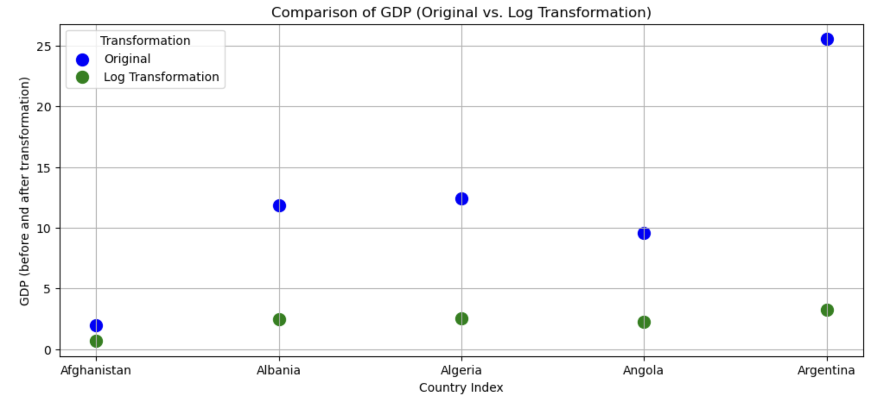
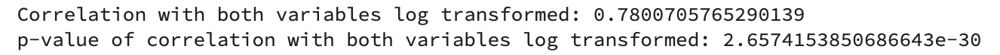

Transforming Data (R)
Course Overview
Red means that the page does not exist yet
Orange means that the page is started
A lot of analyses is dependent on data being normally distributed. One problem with your data might be that it is skewed. Lets focus on the gapminder data from 2007 to see if the gdp and life expectancy data is skewed, and how this could be addressed.
library(gapminder)
library(ggplot2)
# create a new data frame that only focuses on data from 2007
gapminder_2007 <- subset(
gapminder, # the data set
year == 2007
)
# Skewness and kurtosis and their standard errors as implement by SPSS
#
# Reference: pp 451-452 of
# http://support.spss.com/ProductsExt/SPSS/Documentation/Manuals/16.0/SPSS 16.0 Algorithms.pdf
#
# See also: Suggestion for Using Powerful and Informative Tests of Normality,
# Ralph B. D'Agostino, Albert Belanger, Ralph B. D'Agostino, Jr.,
# The American Statistician, Vol. 44, No. 4 (Nov., 1990), pp. 316-321
spssSkewKurtosis=function(x) {
w=length(x)
m1=mean(x)
m2=sum((x-m1)^2)
m3=sum((x-m1)^3)
m4=sum((x-m1)^4)
s1=sd(x)
skew=w*m3/(w-1)/(w-2)/s1^3
sdskew=sqrt( 6*w*(w-1) / ((w-2)*(w+1)*(w+3)) )
kurtosis=(w*(w+1)*m4 - 3*m2^2*(w-1)) / ((w-1)*(w-2)*(w-3)*s1^4)
sdkurtosis=sqrt( 4*(w^2-1) * sdskew^2 / ((w-3)*(w+5)) )
## z-scores added by reading-psych
zskew = skew/sdskew
zkurtosis = kurtosis/sdkurtosis
mat=matrix(c(skew,kurtosis, sdskew,sdkurtosis, zskew, zkurtosis), 2,
dimnames=list(c("skew","kurtosis"), c("estimate","se","zScore")))
return(mat)
}
spssSkewKurtosis(gapminder_2007$gdpPercap) estimate se zScore
skew 1.2241977 0.2034292 6.0178067
kurtosis 0.3500942 0.4041614 0.8662238spssSkewKurtosis(gapminder_2007$lifeExp) estimate se zScore
skew -0.6887771 0.2034292 -3.385832
kurtosis -0.8298204 0.4041614 -2.053191import pandas as pd
import numpy as np
from gapminder import gapminder
# Filter data for the year 2007
gapminder_2007 = gapminder.loc[gapminder['year'] == 2007]
# Define a function to calculate skewness and kurtosis with their standard errors
def spssSkewKurtosis(x):
w = len(x)
m1 = np.mean(x)
m2 = np.sum((x - m1) ** 2)
m3 = np.sum((x - m1) ** 3)
m4 = np.sum((x - m1) ** 4)
s1 = np.std(x)
skew = (w * m3 / ((w - 1) * (w - 2)) / s1 ** 3)
sdskew = np.sqrt(6 * w * (w - 1) / ((w - 2) * (w + 1) * (w + 3)))
kurtosis = (w * (w + 1) * m4 - 3 * m2 ** 2 * (w - 1)) / ((w - 1) * (w - 2) * (w - 3) * s1 ** 4)
sdkurtosis = np.sqrt(4 * (w ** 2 - 1) * sdskew ** 2 / ((w - 3) * (w + 5)))
# Calculate z-scores
zskew = skew / sdskew
zkurtosis = kurtosis / sdkurtosis
# Create a DataFrame for the results
result_df = pd.DataFrame({
"estimate": [skew, kurtosis],
"se": [sdskew, sdkurtosis],
"zScore": [zskew, zkurtosis]
}, index=["skew", "kurtosis"])
return result_df
# Calculate skewness and kurtosis for 'gdpPercap' and 'lifeExp' in 2007
gdpPercap_results = spssSkewKurtosis(gapminder_2007['gdpPercap'])
lifeExp_results = spssSkewKurtosis(gapminder_2007['lifeExp'])
print("Skewness and Kurtosis for 'gdpPercap' in 2007:")
print(gdpPercap_results)
print("\nSkewness and Kurtosis for 'lifeExp' in 2007:")
print(lifeExp_results)So it looks like both the gdp and life expectancy are skewed (as their z-scores are greater than 1.96). Lets double check with a quick plot:
plot(
gapminder_2007$gdpPercap,
gapminder_2007$lifeExp
)
import matplotlib.pyplot as plt
# Create a scatter plot
plt.figure(figsize=(10, 6))
plt.scatter(gapminder_2007['gdpPercap'], gapminder_2007['lifeExp'], alpha=0.6)
plt.title('Scatter Plot of GDP per Capita vs. Life Expectancy (2007)')
plt.xlabel('GDP per Capita')
plt.ylabel('Life Expectancy')
plt.grid(True)
# Show the plot
plt.show()It’s relatively easy to see the skewness of gdp, but life expectancy is a bit more subtle. As the data is skewed, we may want to transform it to make it less skewed.
We can complete a logarithmic transformation to reduce the skewness, so lets do that to both variables and then replot the data:
gapminder_2007$gdpPercap_log <- log(gapminder_2007$gdpPercap)
gapminder_2007$lifeExp_log <- log(gapminder_2007$lifeExp)
plot(
gapminder_2007$gdpPercap_log,
gapminder_2007$lifeExp_log
)
# Calculate the logarithms of 'gdpPercap' and 'lifeExp'
gapminder_2007['gdpPercap_log'] = np.log(gapminder_2007['gdpPercap'])
gapminder_2007['lifeExp_log'] = np.log(gapminder_2007['lifeExp'])
# Create a scatter plot of the log-transformed variables
plt.figure(figsize=(10, 6))
plt.scatter(gapminder_2007['gdpPercap_log'], gapminder_2007['lifeExp_log'], alpha=0.6)
plt.title('Scatter Plot of Log(GDP per Capita) vs. Log(Life Expectancy) (2007)')
plt.xlabel('Log(GDP per Capita)')
plt.ylabel('Log(Life Expectancy)')
plt.grid(True)
# Show the plot
plt.show()Lets check if the skewness has changed for the gdp:
# original gdp
spssSkewKurtosis(gapminder_2007$gdpPercap) estimate se zScore
skew 1.2241977 0.2034292 6.0178067
kurtosis 0.3500942 0.4041614 0.8662238# transformed gdp (log)
spssSkewKurtosis(gapminder_2007$gdpPercap_log) estimate se zScore
skew -0.1540524 0.2034292 -0.7572778
kurtosis -1.1256815 0.4041614 -2.7852277# original gdp
spssSkewKurtosis(gapminder_2007['gdpPercap'])
# transformed gdp (log)
spssSkewKurtosis(gapminder_2007['gdpPercap_log'])So, transforming the gdp did reduce skewness but increased kurtsosis, so beware that applying a transformation may cause other problems! Lets check whether the log transformation reduced skewness for life expectancy:
# original life expectancy
spssSkewKurtosis(gapminder_2007$lifeExp) estimate se zScore
skew -0.6887771 0.2034292 -3.385832
kurtosis -0.8298204 0.4041614 -2.053191# transformed life expectancy (log)
spssSkewKurtosis(gapminder_2007$lifeExp_log) estimate se zScore
skew -0.9043617 0.2034292 -4.445584
kurtosis -0.4136699 0.4041614 -1.023527# original life expectancy
spssSkewKurtosis(gapminder_2007['lifeExp'])
# transformed life expectancy (log)
spssSkewKurtosis(gapminder_2007['lifeExp_log'])
Seems like the answer is no.
An important question is whether the associations between your variables change after transformation, so let’s check that next:
# correlation on original data
cor.test(
gapminder_2007$gdpPercap,
gapminder_2007$lifeExp
)
Pearson's product-moment correlation
data: gapminder_2007$gdpPercap and gapminder_2007$lifeExp
t = 10.933, df = 140, p-value < 2.2e-16
alternative hypothesis: true correlation is not equal to 0
95 percent confidence interval:
0.5786217 0.7585843
sample estimates:
cor
0.6786624 # correlation on transformed data
cor.test(
gapminder_2007$gdpPercap_log,
gapminder_2007$lifeExp_log
)
Pearson's product-moment correlation
data: gapminder_2007$gdpPercap_log and gapminder_2007$lifeExp_log
t = 14.752, df = 140, p-value < 2.2e-16
alternative hypothesis: true correlation is not equal to 0
95 percent confidence interval:
0.7060729 0.8372165
sample estimates:
cor
0.7800706 from scipy import stats
# Perform a correlation test on the original data
correlation_original = stats.pearsonr(gapminder_2007['gdpPercap'], gapminder_2007['lifeExp'])
# Perform a correlation test on the transformed data
correlation_transformed = stats.pearsonr(gapminder_2007['gdpPercap_log'], gapminder_2007['lifeExp_log'])
# Print the correlation results
print("Correlation on Original Data:")
print("Pearson correlation coefficient:", correlation_original[0])
print("p-value:", correlation_original[1])
print("\nCorrelation on Transformed Data:")
print("Pearson correlation coefficient:", correlation_transformed[0])
print("p-value:", correlation_transformed[1])The log transformed data is more strongly associated with each other than the original data. However, not all transformations will change associations between variables.
Linear vs. non-linear transformations
Linear transformation includes adding, subtracting from, multiplying or dividing variables. These transformations change the absolute value, but not pattern of the distribution of the variable. Let’s use life expectancy to illustrate how linear transformations change the absolute values without changing the distribution.
Additive transformations
If you added 100 to the life expectancy for all countries, you would change the absolute value:
# before transformation
mean(gapminder_2007$lifeExp)[1] 67.00742# after transformation
mean(gapminder_2007$lifeExp + 100)[1] 167.0074# before transformation
gapminder_2007['lifeExp'].mean()
# after transformation
np.mean(gapminder_2007['lifeExp'] + 100)67.00742253521126167.00742253521128There’s a big difference between the means, but all we’ve done is shift the distribution up 100, we haven’t made it wider or thinner:
# before transformation
sd(gapminder_2007$lifeExp)[1] 12.07302# after transformation
sd(gapminder_2007$lifeExp + 100)[1] 12.07302# before transformation [use ddof =1 for sample sd, and ddof=0 for population sd]
np.std(gapminder_2007['lifeExp'], ddof=1)
# after transformation [use ddof =1 for sample sd, and ddof=0 for population sd]
np.std(gapminder_2007['lifeExp'] + 100, ddof=1)12.0730205022251212.07302050222512If we were to visualise this transformation
life_exp_before_after <- data.frame(
life_exp = c(gapminder_2007$lifeExp, gapminder_2007$lifeExp + 100),
tranformed = c(rep("before", each = 142), rep("after", each =142))
)
ggplot(life_exp_before_after, aes(x=life_exp, fill=tranformed)) +
geom_histogram(binwidth = 2, alpha=.5, position = "identity") +
ggtitle("Before vs. after additive transformation") 
# Create a DataFrame for 'lifeExp' before and after the transformation
life_exp_before_after = pd.DataFrame({
'life_exp': np.concatenate([gapminder_2007['lifeExp'], gapminder_2007['lifeExp'] + 100]),
'transformed': np.concatenate([np.repeat('before', len(gapminder_2007)), np.repeat('after', len(gapminder_2007))])
})
# Create a histogram
plt.figure(figsize=(10, 6))
plt.hist(life_exp_before_after[life_exp_before_after['transformed'] == 'before']['life_exp'],
bins=range(0, 120, 2), alpha=0.5, label='Before Transformation', color='blue')
plt.hist(life_exp_before_after[life_exp_before_after['transformed'] == 'after']['life_exp'],
bins=range(0, 220, 2), alpha=0.5, label='After Transformation', color='green')
plt.title("Before vs. After Additive Transformation")
plt.xlabel("Life Expectancy")
plt.legend()
# Show the histogram
plt.show()We can see above that there is no difference in the shape of the distributions, but a shift. You would get the same pattern shifted also if you had subtracted from the original data. As a result, any association between the transformed variable and another variable will be the same as it was before the transformation as the shapes of the distributions are still the same.
Multiplicative transformations
If you multiplied the life expectancy by 1.5 then you would change both the mean
# before transformation
mean(gapminder_2007$lifeExp)[1] 67.00742# after transformation
mean(gapminder_2007$lifeExp * 1.5)[1] 100.5111# before transformation
gapminder_2007['lifeExp'].mean()
# after transformation
np.mean(gapminder_2007['lifeExp'] * 1.5)67.00742253521126100.51113380281689and SD of life expectancy
# before transformation
sd(gapminder_2007$lifeExp)[1] 12.07302# after transformation
sd(gapminder_2007$lifeExp * 1.5)[1] 18.10953# before transformation [use ddof =1 for sample sd, and ddof=0 for population sd]
np.std(gapminder_2007['lifeExp'], ddof=1)
# after transformation [use ddof =1 for sample sd, and ddof=0 for population sd]
np.std(gapminder_2007['lifeExp'] * 1.5, ddof=1)12.0730205022251218.109530753337683We established above that changing the mean isn’t sufficient to change the shape of a distribution, but would changing the standard deviation change the shape of the distribution. Let’s put two histograms of each distribution side by side to evaluate this:
par(mfrow = c(1,2),
mar = c(0,0,2,1))
hist(gapminder_2007$lifeExp, breaks = seq(min(gapminder_2007$lifeExp), max(gapminder_2007$lifeExp), length.out = 11), main = "Original")
hist(gapminder_2007$lifeExp*1.5, breaks = seq(min(gapminder_2007$lifeExp*1.5), max(gapminder_2007$lifeExp*1.5), length.out = 11), main = "Original * 1.5")
# Create subplots with two histograms
fig, axs = plt.subplots(1, 2, figsize=(12, 5))
# Plot the original 'lifeExp' histogram
axs[0].hist(gapminder_2007['lifeExp'],bins=range(0, 120, 2), alpha=0.5, label='Before Transformation', color='blue')
axs[0].set_title("Original")
axs[0].set_xlabel("Life Expectancy")
axs[0].set_ylabel("Frequency")
# Plot the 'lifeExp' * 1.5 histogram
axs[1].hist(gapminder_2007['lifeExp'] * 1.5, bins=range(0, 120, 2), color='green', alpha=0.5)
axs[1].set_title("Original * 1.5")
axs[1].set_xlabel("Life Expectancy")
axs[1].set_ylabel("Frequency")
# Adjust layout
plt.tight_layout()
# Show the histograms
plt.show()We can see that the shape/pattern of the distribution is the same, and so the association between the transformed variable and other variables will stay the same after transformation. This is because associations between variables ignore the scale of either variable.
Non-linear transformations
Unlike linear transformations, non-linear transformations change the shape of distributions. There are a wide variety of non-linear transformations you could apply to a variable, such as…
Square (\(^2\))
par(mfrow = c(1,2),
mar = c(0,0,2,1))
hist(gapminder_2007$gdpPercap, main = "Original")
hist(gapminder_2007$gdpPercap^2, main = "Squared")
# Create subplots with two histograms
fig, axs = plt.subplots(1, 2, figsize=(12, 5))
# Plot the original 'gdpPercap' histogram
axs[0].hist(gapminder_2007['gdpPercap'], alpha=0.5, label='Before Transformation', color='blue')
axs[0].set_title("Original")
axs[0].set_xlabel("Life Expectancy")
axs[0].set_ylabel("Frequency")
# Plot the squared 'gdpPercap' histogram
axs[1].hist(np.square(gapminder_2007['gdpPercap']), color='green', alpha=0.5)
axs[1].set_title("Squared")
axs[1].set_xlabel("Life Expectancy")
axs[1].set_ylabel("Frequency")
# Adjust layout
plt.tight_layout()
# Show the histograms
plt.show()Squaring data is likely to make the distributions more extreme, and so isn’t often a pragmatic solution to try to make your data less skewed.
Square root (\(\sqrt{}\))
par(mfrow = c(1,2),
mar = c(0,0,2,1))
hist(gapminder_2007$gdpPercap, main = "Original")
hist(sqrt(gapminder_2007$gdpPercap), main = "Square root")
# Create subplots with two histograms
fig, axs = plt.subplots(1, 2, figsize=(12, 5))
# Plot the original 'gdpPercap' histogram
axs[0].hist(gapminder_2007['gdpPercap'], alpha=0.5, label='Before Transformation', color='blue')
axs[0].set_title("Original")
axs[0].set_xlabel("GDP per Capita")
axs[0].set_ylabel("Frequency")
# Plot the square root 'gdpPercap' histogram
axs[1].hist(np.sqrt(gapminder_2007['gdpPercap']), color='green', alpha=0.5)
axs[1].set_title("Square root")
axs[1].set_xlabel("GDP per Capita")
axs[1].set_ylabel("Frequency")
# Adjust layout
plt.tight_layout()
# Show the histograms
plt.show()This transformation appears to have reduced the skewness of the distribution. Calculating the square root of a variable will disproportionately reduce extreme values compared to less extreme values. This might be more clearly shown by looking at the change in the individual data points:
# focusing on 5 countries to make it visually easier
gapminder_sqrt <- data.frame(
country = gapminder_2007$country[1:5],
transformed = c(
rep("Original",5),
rep("Square Root",5)
),
# gdp has been divided by 500 to make the comparisons more visible
gdp = c(gapminder_2007$gdpPercap[1:5]/500, sqrt(gapminder_2007$gdpPercap[1:5]/500))
)
ggplot(gapminder_sqrt, aes(x=country, y = gdp, color = transformed)) +
geom_point(size=5) +
xlab("Country index") +
ylab("GDP (before and after transformation)") 
# Sample data for 5 countries
data = pd.DataFrame({
'Country': gapminder_2007['country'].iloc[:5].tolist() * 2,
'Transformation': ['Original'] * 5 + ['Square Root'] * 5,
'GDP': (gapminder_2007['gdpPercap'].iloc[:5] / 500).tolist() + (np.sqrt(gapminder_2007['gdpPercap'].iloc[:5] / 500)).tolist()
})
# Create a scatter plot
plt.figure(figsize=(12, 5))
colors = ['blue', 'green']
markers = ['o', 's']
for i, transformation in enumerate(['Original', 'Square Root']):
subset = data[data['Transformation'] == transformation]
plt.scatter(subset['Country'], subset['GDP'], label=transformation, color=colors[i], s=100)
plt.title("Comparison of GDP (Original vs. Square Root Transformation)")
plt.xlabel("Country Index")
plt.ylabel("GDP (before and after transformation)")
plt.legend(title='Transformation')
plt.grid(True)
# Show the plot
plt.show()As you can see above, the original values (pink) that are higher are much more heavily reduced by square root transforming them than lower original values.
Logarithmic (\(\log\))
par(mfrow = c(1,2),
mar = c(0,0,2,1))
hist(gapminder_2007$gdpPercap, main = "Original")
hist(log(gapminder_2007$gdpPercap), main = "Logarithmic")
# Create subplots with two histograms
fig, axs = plt.subplots(1, 2, figsize=(12, 5))
# Plot the original 'gdpPercap' histogram
axs[0].hist(gapminder_2007['gdpPercap'], alpha=0.5, label='Before Transformation', color='blue')
axs[0].set_title("Original")
axs[0].set_xlabel("GDP per Capita")
axs[0].set_ylabel("Frequency")
# Plot the 'gdpPercap' * 1.5 histogram
axs[1].hist(np.log(gapminder_2007['gdpPercap']), color='green', alpha=0.5)
axs[1].set_title("Logarithmic")
axs[1].set_xlabel("GDP per Capita")
axs[1].set_ylabel("Frequency")
# Adjust layout
plt.tight_layout()
# Show the histograms
plt.show()This transformation seems very successful in changing the distribution shape to be less skewed. Let’s see if the log transformation follows a similar pattern as the sqrt in disproportionately impacting larger values than smaller values.
# focusing on 5 countries to make it visually easier
gapminder_log <- data.frame(
country = gapminder_2007$country[1:5],
transformed = c(
rep("Original",5),
rep("Log Transformation",5)
),
# gdp has been divided by 500 to make the comparisons more visible
gdp = c(gapminder_2007$gdpPercap[1:5]/500, log(gapminder_2007$gdpPercap[1:5]/500))
)
ggplot(gapminder_log, aes(x=country, y = gdp, color = transformed)) +
geom_point(size=5) +
xlab("Country index") +
ylab("GDP (before and after transformation)") 
# Sample data for 5 countries
data = pd.DataFrame({
'Country': gapminder_2007['country'].iloc[:5].tolist() * 2,
'Transformation': ['Original'] * 5 + ['Log Transformation'] * 5,
'GDP': (gapminder_2007['gdpPercap'].iloc[:5] / 500).tolist() + (np.log(gapminder_2007['gdpPercap'].iloc[:5] / 500)).tolist()
})
# Create a scatter plot
plt.figure(figsize=(12, 5))
colors = ['blue', 'green']
markers = ['o', 's']
for i, transformation in enumerate(['Original', 'Log Transformation']):
subset = data[data['Transformation'] == transformation]
plt.scatter(subset['Country'], subset['GDP'], label=transformation, color=colors[i], s=100)
plt.title("Comparison of GDP (Original vs. Log Transformation)")
plt.xlabel("Country Index")
plt.ylabel("GDP (before and after transformation)")
plt.legend(title='Transformation')
plt.grid(True)
# Show the plot
plt.show()
Yep, log also reduces skewness by disproportionately reducing higher values.
Linear transformations will not change the association between variables
You can transform a single variable by adding and multiplying it, but as these are linear transformations they do not change the shape of the distributions of the original variables, and thus do not change the association between variables. For example:
# correlation with original data
cor.test(
gapminder_2007$gdpPercap,
gapminder_2007$lifeExp
)
Pearson's product-moment correlation
data: gapminder_2007$gdpPercap and gapminder_2007$lifeExp
t = 10.933, df = 140, p-value < 2.2e-16
alternative hypothesis: true correlation is not equal to 0
95 percent confidence interval:
0.5786217 0.7585843
sample estimates:
cor
0.6786624 # correlation with original data + 5 to one variable (an additive change)
cor.test(
gapminder_2007$gdpPercap + 5,
gapminder_2007$lifeExp + 5
)
Pearson's product-moment correlation
data: gapminder_2007$gdpPercap + 5 and gapminder_2007$lifeExp + 5
t = 10.933, df = 140, p-value < 2.2e-16
alternative hypothesis: true correlation is not equal to 0
95 percent confidence interval:
0.5786217 0.7585843
sample estimates:
cor
0.6786624 # correlation with original data - 10 to one variable (an additive change)
cor.test(
gapminder_2007$gdpPercap - 10,
gapminder_2007$lifeExp - 10
)
Pearson's product-moment correlation
data: gapminder_2007$gdpPercap - 10 and gapminder_2007$lifeExp - 10
t = 10.933, df = 140, p-value < 2.2e-16
alternative hypothesis: true correlation is not equal to 0
95 percent confidence interval:
0.5786217 0.7585843
sample estimates:
cor
0.6786624 # correlation with multiplication of 5 to one variable (multiplicative)
cor.test(
gapminder_2007$gdpPercap * 5,
gapminder_2007$lifeExp * 5
)
Pearson's product-moment correlation
data: gapminder_2007$gdpPercap * 5 and gapminder_2007$lifeExp * 5
t = 10.933, df = 140, p-value < 2.2e-16
alternative hypothesis: true correlation is not equal to 0
95 percent confidence interval:
0.5786217 0.7585843
sample estimates:
cor
0.6786624 # grid comparing the 4 transformations
par(mfrow = c(2,2),
mar = c(2,2,2,1))
plot(gapminder_2007$gdpPercap, gapminder_2007$lifeExp, main="original correlation")
plot(gapminder_2007$gdpPercap + 5, gapminder_2007$lifeExp +5, main="added 5 to gdp")
plot(gapminder_2007$gdpPercap - 10, gapminder_2007$lifeExp - 10, main = "took 10 away from gdp")
plot(gapminder_2007$gdpPercap *5, gapminder_2007$lifeExp *5, main = "multiplied gdp by 5")
from scipy.stats import pearsonr
# Define the transformations
gdp_plus_5 = gapminder_2007['gdpPercap'] + 5
gdp_minus_10 = gapminder_2007['gdpPercap'] - 10
gdp_times_5 = gapminder_2007['gdpPercap'] * 5
life_plus_5 = gapminder_2007['lifeExp'] + 5
life_minus_10 = gapminder_2007['lifeExp'] - 10
life_times_5 = gapminder_2007['lifeExp'] * 5
# correlation with original data
correlation_original, pvalue_original = pearsonr(gapminder_2007['gdpPercap'], gapminder_2007['lifeExp'])
print("Correlation with original data:", correlation_original)
print("p-value of correlation with original data:", pvalue_original)
# correlation with original data + 5 to both variables (an additive change)
correlation_plus_5, pvalue_plus_5 = pearsonr(gdp_plus_5, life_plus_5)
print("Correlation with original data + 5:", correlation_plus_5)
print("p-value of correlation with original data +5:", pvalue_plus_5)
# correlation with original data - 10 to both variables (an additive change)
correlation_minus_10, pvalue_minus_10 = pearsonr(gdp_minus_10, life_minus_10)
print("Correlation with original data - 10:", correlation_minus_10)
print("p-value of correlation with original data -10:", pvalue_minus_10)
# correlation with multiplication of 5 to both variables (multiplicative)
correlation_times_5, pvalue_times_5 = pearsonr(gdp_times_5, life_times_5)
print("Correlation with multiplication of 5:", correlation_times_5)
print("p-value of correlation with multiplication of 5:", pvalue_times_5)
# Create a grid of scatter plots
plt.figure(figsize=(12, 6))
plt.subplot(2, 2, 1)
plt.scatter(gapminder_2007['gdpPercap'], gapminder_2007['lifeExp'])
plt.title("Original Correlation")
plt.subplot(2, 2, 2)
plt.scatter(gdp_plus_5, life_plus_5)
plt.title("Added 5P")
plt.subplot(2, 2, 3)
plt.scatter(gdp_minus_10, life_minus_10)
plt.title("Took 10 Away")
plt.subplot(2, 2, 4)
plt.scatter(gdp_times_5, life_times_5)
plt.title("Multiplied by 5")
plt.tight_layout()
plt.show()
You can see that the transformations being linear haven’t changed the nature of the associations.
Non-linear transformations do change associations
If you apply non-linear transformations to one or both variables this will change the direction and strength of the associations. Below are some examples when you transform both variables:
# correlation with original data
cor.test(
gapminder_2007$gdpPercap,
gapminder_2007$lifeExp
)
Pearson's product-moment correlation
data: gapminder_2007$gdpPercap and gapminder_2007$lifeExp
t = 10.933, df = 140, p-value < 2.2e-16
alternative hypothesis: true correlation is not equal to 0
95 percent confidence interval:
0.5786217 0.7585843
sample estimates:
cor
0.6786624 # correlation with log of variables
cor.test(
log(gapminder_2007$gdpPercap),
log(gapminder_2007$lifeExp)
)
Pearson's product-moment correlation
data: log(gapminder_2007$gdpPercap) and log(gapminder_2007$lifeExp)
t = 14.752, df = 140, p-value < 2.2e-16
alternative hypothesis: true correlation is not equal to 0
95 percent confidence interval:
0.7060729 0.8372165
sample estimates:
cor
0.7800706 # correlation with both variables squared
cor.test(
gapminder_2007$gdpPercap ^ 2,
gapminder_2007$lifeExp ^ 2
)
Pearson's product-moment correlation
data: gapminder_2007$gdpPercap^2 and gapminder_2007$lifeExp^2
t = 8.6437, df = 140, p-value = 1.123e-14
alternative hypothesis: true correlation is not equal to 0
95 percent confidence interval:
0.4709220 0.6877841
sample estimates:
cor
0.5898894 # correlation with square root of both variable
cor.test(
sqrt(gapminder_2007$gdpPercap),
sqrt(gapminder_2007$lifeExp)
)
Pearson's product-moment correlation
data: sqrt(gapminder_2007$gdpPercap) and sqrt(gapminder_2007$lifeExp)
t = 12.981, df = 140, p-value < 2.2e-16
alternative hypothesis: true correlation is not equal to 0
95 percent confidence interval:
0.6539524 0.8057025
sample estimates:
cor
0.7390648 # grid comparing the 4 transformations
par(mfrow = c(2,2),
mar = c(2,2,2,1))
plot(gapminder_2007$gdpPercap, gapminder_2007$lifeExp, main = "original correlation")
plot(log(gapminder_2007$gdpPercap),log(gapminder_2007$lifeExp), main = "log applied")
plot(gapminder_2007$gdpPercap ^ 2,gapminder_2007$lifeExp ^ 2, main = "data squared")
plot(sqrt(gapminder_2007$gdpPercap),sqrt(gapminder_2007$lifeExp), main = "square root of data")
from scipy.stats import pearsonr
# Define the transformations
gdp_log = np.log(gapminder_2007['gdpPercap'])
gdp_sqrt = np.sqrt(gapminder_2007['gdpPercap'])
gdp_squared = np.square(gapminder_2007['gdpPercap'])
life_log = np.log(gapminder_2007['lifeExp'])
life_sqrt = np.sqrt(gapminder_2007['lifeExp'])
life_squared = np.square(gapminder_2007['lifeExp'])
# correlation with original data
correlation_original, pvalue_original = pearsonr(gapminder_2007['gdpPercap'], gapminder_2007['lifeExp'])
print("Correlation with original data:", correlation_original)
print("p-value of correlation with original data:", pvalue_original)
# correlation with both variables log transformed
correlation_log, pvalue_log = pearsonr(gdp_log, life_log)
print("Correlation with both variables log transformed:", correlation_log)
print("p-value of correlation with both variables log transformed:", pvalue_log)
# correlation with both variables square rooted
correlation_sqrt, pvalue_sqrt = pearsonr(gdp_sqrt, life_sqrt)
print("Correlation with both variables square rooted:", correlation_sqrt)
print("p-value of correlation with both variables square rooted:", pvalue_sqrt)
# correlation with both variables squared
correlation_squared, pvalue_squared = pearsonr(gdp_squared, life_squared)
print("Correlation with both variables squared:", correlation_squared)
print("p-value of correlation with multiplication of 5:", pvalue_squared)
# Create a grid of scatter plots
plt.figure(figsize=(12, 6))
plt.subplot(2, 2, 1)
plt.scatter(gapminder_2007['gdpPercap'], gapminder_2007['lifeExp'])
plt.title("Original Correlation")
plt.subplot(2, 2, 2)
plt.scatter(gdp_log, life_log)
plt.title("Log Transformation")
plt.subplot(2, 2, 3)
plt.scatter(gdp_sqrt, life_sqrt)
plt.title("Square Root Transformation")
plt.subplot(2, 2, 4)
plt.scatter(gdp_squared, life_squared)
plt.title("Squared Transformation")
plt.tight_layout()
plt.show()
Transforming is not universally accepted
Whilst this page describes ways to transform the data and how they impact the distributions, this isn’t universally accepted practice as it is changing your data (perhaps similar to arguments that you shouldn’t remove outliers if they reflect real data points). However, transformation does not necessarily bias your data towards or against hypotheses if done appropriately, and is in fact used in mainstream analyses such Spearman’s Rank correlations. There are at least two major possible problems from inappropriately transforming your data:
If it becomes a form of fishing for data through multiple comparisons.
Treating your data unevenly to create meaningless differences between conditions. For example, if you ran a t-test between 2 conditions, but one of them wasn’t normally distributed, then transforming only one of the conditions could make your comparison less meaningful. Let’s use the gapminder data to illustrate this by comparing gdp per capita between Europe and Africa:
spssSkewKurtosis(gapminder_2007$gdpPercap[gapminder_2007$continent == "Europe"]) estimate se zScore
skew -0.1028377 0.4268924 -0.2408985
kurtosis -1.0441533 0.8327456 -1.2538683spssSkewKurtosis((gapminder_2007$gdpPercap[gapminder_2007$continent == "Africa"])) estimate se zScore
skew 1.707376 0.3304137 5.167389
kurtosis 1.793325 0.6500932 2.758566spssSkewKurtosis(gapminder_2007['gdpPercap'].loc[gapminder_2007['continent'] == "Europe"])
spssSkewKurtosis(gapminder_2007['gdpPercap'].loc[gapminder_2007['continent'] == "Africa"])
So We can see that there’s a significant problem with skewness for countries from Africa (zScore > 1.96) but not from Europe. The correct thing to do is to apply any transformation (to address skewness) to Africa to Europe also to avoid differences between the groups reflecting bias from the distortions. Logarithmic transformations can help reduce skewness, so let’s see how the means compare after applying the log transformation to both groups:
mean(gapminder_2007$gdpPercap_log[gapminder_2007$continent == "Europe"])[1] 9.985978mean(gapminder_2007$gdpPercap_log[gapminder_2007$continent == "Africa"])[1] 7.486539np.log(gapminder_2007['gdpPercap'].loc[gapminder_2007['continent'] == "Europe"]).mean()
np.log(gapminder_2007['gdpPercap'].loc[gapminder_2007['continent'] == "Africa"]).mean()9.9859781300532167.486539235254513There’s a difference, in which Europe had a higher GDP per capita in 2007. Let’s check if both Europe and Africa are less skewed in their distributions after log-transforming their data:
spssSkewKurtosis(gapminder_2007$gdpPercap_log[gapminder_2007$continent == "Europe"]) estimate se zScore
skew -0.7604293 0.4268924 -1.7813138
kurtosis -0.6776747 0.8327456 -0.8137835spssSkewKurtosis(gapminder_2007$gdpPercap_log[gapminder_2007$continent == "Africa"]) estimate se zScore
skew 0.5431380 0.3304137 1.643812
kurtosis -0.6719277 0.6500932 -1.033587spssSkewKurtosis(np.log(gapminder_2007['gdpPercap'].loc[gapminder_2007['continent'] == "Europe"]))
spssSkewKurtosis(np.log(gapminder_2007['gdpPercap'].loc[gapminder_2007['continent'] == "Africa"]))
Looking good. Now, what would have happened if we had only log-transformed Africa’s data as it had the skewed distribution:
mean(gapminder_2007$gdpPercap[gapminder_2007$continent == "Europe"])[1] 25054.48mean(gapminder_2007$gdpPercap_log[gapminder_2007$continent == "Africa"])[1] 7.486539gapminder_2007['gdpPercap'].loc[gapminder_2007['continent'] == "Europe"].mean()
np.log(gapminder_2007['gdpPercap'].loc[gapminder_2007['continent'] == "Africa"])25054.4816359333387.486539235254513It now looks like Europeans have 3346.604 times as much GDP per capita as Africa!?
The above example hopefully is quite intuitive how problems arise if you apply transformations mindlessly. If you will be comparing differences in magnitudes between conditions, then it is important that transformations are applied equally to avoid bias. If you are correlating between conditions (or conducting a regression), then you do not have the same issue of bias.
Question 1
Which types of transformations might make a distribution normal?
Question 2
Which of the following transformations is least likely to result in a normal distribution?